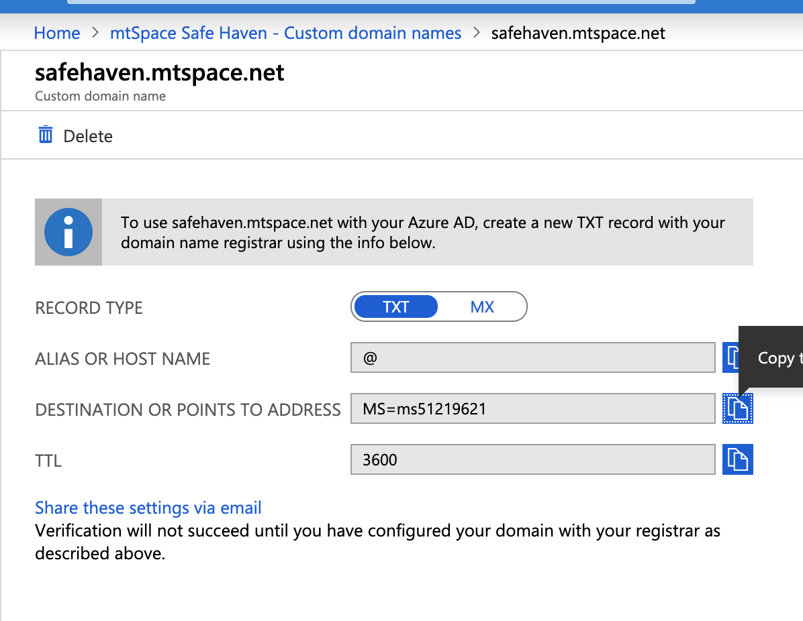
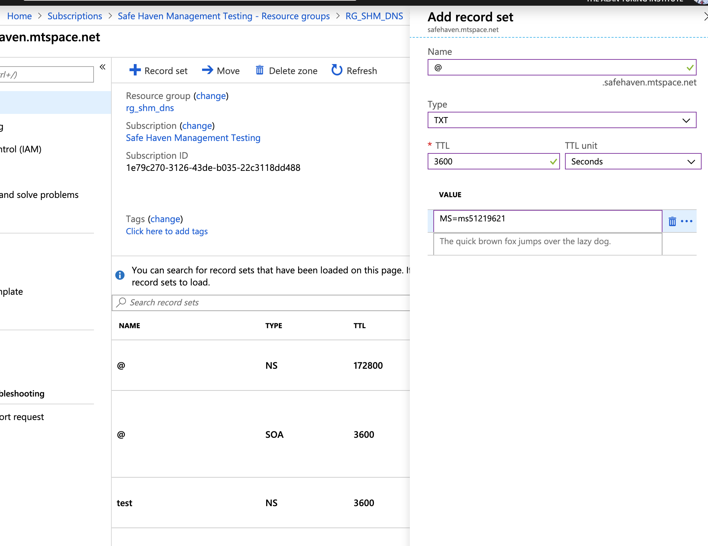
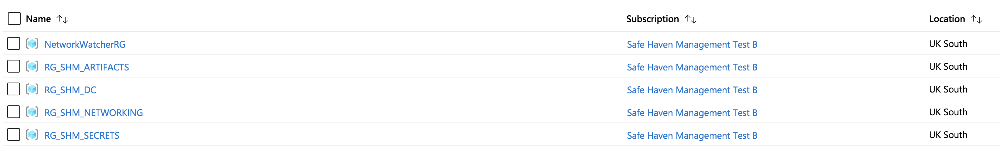
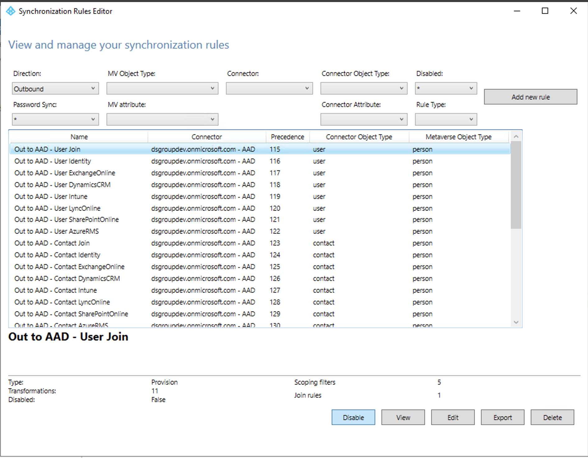

Safe Haven Management Environment Build Instructions¶
These instructions will deploy a new Safe Haven Management Environment (SHM). This is required to manage your Secure Research Environments (SREs) and must be deployed before you create any SREs. A single SHM can manage all your SREs. Alternatively, you may run multiple SHMs concurrently (eg one for each Data Study Group).
Contents¶
1. Prerequisites¶
An Azure subscription with sufficient credits to build the environment in
PowerShell for Azure
Install PowerShell v 6.0 or above
Install the Azure PowerShell Module
Microsoft Remote Desktop
On Mac this can be installed from the apple store
OpenSSL
Install using your package manager of choice
2. Safe Haven Management configuration¶
Domain name¶
Choose a domain according to the following rules:
Turing production: a subdomain of the
turingsafehaven.ac.ukdomainTuring testing: a subdomain of the
dsgroupdev.co.ukdomainOther safe havens: follow your organisation’s guidance. This may require purchasing a dedicated domain
Management environment ID <shmId>¶
Choose a short ID <shmId> to identify the management environment (e.g. testa).
Create configuration file¶
The core properties for the Safe Haven Management (SHM) environment must be present in the environment_configs/core folder. These are also used when deploying an SRE environment.
The following core SHM properties must be defined in a JSON file named shm_<shmId>_core_config.json. The shm_testa_core_config.json provides an example.
NOTE: The netbiosName must have a maximum length of 15 characters.
{
"subscriptionName": "Name of the Azure subscription the management environment is deployed in",
"domainSubscriptionName": "Name of the Azure subscription holding DNS records",
"adminSecurityGroupName" : "Name of the Azure Security Group that admins of this Safe Haven will belong to",
"computeVmImageSubscriptionName": "Azure Subscription name for compute VM",
"domain": "The fully qualified domain name for the management environment",
"netbiosname": "A short name to use as the local name for the domain. This must be 15 characters or less",
"shmId": "A short ID to identify the management environment",
"name": "Safe Haven deployment name",
"organisation": {
"name": "Organisation name",
"townCity": "Location",
"stateCountyRegion": "Location",
"countryCode": "e.g. GB"
},
"location": "The Azure location in which the management environment VMs are deployed",
"ipPrefix": "The three octet IP address prefix for the Class A range used by the management environment. Use 10.0.0 for this unless you have a good reason to use another prefix."
}
3. Configure DNS for the custom domain¶
Create a DNS zone for the custom domain¶
Whatever new domain or subdomain you choose, you must create a new Azure DNS Zone for the domain or subdomain.
Use the following resource group and subscriptions:
Turing production (
.turingsafehaven.ac.uk):use the
Safe Haven Domainssubscriptionuse the
RG_SHM_DNS_PRODUCTIONresource group
Turing testing (
.dsgroupdev.co.uk):use the
Safe Haven Domainssubscriptionuse the
RG_SHM_DNS_TESTresource group
Other safe havens: follow your organisation’s guidance.
If the resource group specified above does not exist in your chosen subscription, create it now in the
UK SouthregionClick
Create a resourcein the far left menu, search for “DNS Zone” and clickCreate, using the above resource group and subscription.For the
Namefield enter the fully qualified domain / subdomain. Examples are:testa.dsgroupdev.co.ukfor the first test SHM deployed as part of the Turingtestenvironmenttestb.dsgroupdev.co.ukfor a second test SHM deployed as part of the Turingtestenvironmentturingsafehaven.ac.ukfor the production SHM deployed as the Turingproductionenvironment
Click through the various validation screens
Add DNS records to the parent DNS system¶
Once the new DNS Zone for your domain/subdomain has been deployed, you need to add an NS record set to the parent DNS records in the parent’s DNS system.
To find the required values for the NS records, use the Azure portal to navigate to the new DNS Zone (click
All resourcesin the far left panel and search for “DNS Zone”). The NS record will list 4 Azure name servers.Duplicate these records to the parent DNS system as follows:
If using a subdomain of an existing Azure DNS Zone, create an NS record set in the parent Azure DNS Zone. The name should be set to the subdomain, and the values duplicated from above (for example, for a new subdomain
testa.dsgroupdev.co.uk, duplicate its NS record to the Azure DNS Zone fordsgroupdev.co.uk, under the nametesta).If using a new domain, create an NS record in at the registrar for the new domain with the same value as the NS record in the new Azure DNS Zone for the domain.
4. Setup Azure Active Directory (AAD)¶
Create a new AAD¶
Login to the Azure Portal
Click
Create a Resourceand search forAzure Active Directory
Click
CreateSet the “Organisation Name” to
<organisation> Safe Haven <environment>, e.g.Turing Safe Haven Test ASet the “Initial Domain Name” to the “Organisation Name” all lower case with spaces removed
Set the “Country or Region” to “United Kingdom”
Click
Create
Add the custom domain to the new AAD¶
Navigate to
Active Directoryand then clickCustom domain namesin the left panel. ClickAdd custom domainat the top and create a new domain name (e.g.testa.dsgroupdev.co.uk)If the Custom domain name blade shows
Status Verifiedand no DNS details are displayed, you can skip to the next section. Otherwise, if you see DNS record details similar to the image below, you need to verify the domain. Note down the required details displayed and complete the following steps. In a separate Azure portal window, switch to the Turing directory and navigate to the DNS Zone for your custom domain within the
RG_SHM_DNSresource group in the management subscription.Create a new record using the details provided (the
@goes in theNamefield and the TTL of 3600 is in seconds) Navigate back to the custom domain creation screen in the new AAD and click
VerifyWait a few minutes then click on the domain that you just added and click the
Make primarybutton.
5. Deploy key vault for SHM secrets¶
Ensure you have the latest version of the Safe Haven repository from https://github.com/alan-turing-institute/data-safe-haven.
Open a Powershell terminal and navigate to the
deployment/safe_haven_management_environment/setupdirectory within the Safe Haven repository.Ensure you are logged into Azure within PowerShell using the command:
Connect-AzAccountDeploy and configure the RDS VMs by running
./Setup_SHM_KeyVault.ps1 -shmId <SHM ID>, where the SHM ID is the one specified in the configThis will take a few minutes to run.
6. Setup Safe Haven administrators¶
Add global administrator¶
The User who creates the AAD will automatically have the Global Administrator (GA) Role (Users with this role have access to all administrative features in Azure Active Directory).
For some steps, a dedicated internal Global Administrator is required (e.g. to add P1 licences), so at least this additional administrator will need to be created.
Ensure your Azure Portal session is using the new Safe Haven Management (SHM) AAD directory. The name of the current directory is under your username in the top right corner of the Azure portal screen. To change directories click on your username at the top right corner of the screen, then
Switch directory, then the name of the new SHM directory.On the left hand panel click
Azure Active Directory.Navigate to
Usersand create a dedicated internal Global Administrator:Click on
+New userand enter the following details:Name:
AAD Global AdminUsername:
admin@<SHM domain>Under
Groups and roles > Roleschange the role toGlobal AdministratorUnder
Settings > Usage locationchange the location toUnited KingdomClick
Create
Click on the username in the users list in the Azure Active Directory
Click the “Reset password” icon to generate a temporary password
Use this password to log into https://portal.azure.com as the user
admin@<SHM domain>. You will either need to log out of your existing account or open an incognito/private browsing window.When prompted to change your password on first login:
Look in the KeyVault under the
RG_SHM_SECRETSresource group in the management subscription.There should be a secret there called
shm-<shmId>-aad-admin-passwordUse this as the new password
If you are prompted to associate a phone number and email address with the account - do so.
Once you have set your password and logged in you can administer the Azure Active Directory with this user by selecting
Azure Active Directoryin the left hand sidebar
Add additional administrators (optional)¶
Giving additional users the GA role, prevents the user you set up earlier from being a single point of failure.
Navigate to
Usersand add new admin users as above:Click on “+New user” and enter the following details:
Name:
Admin - Firstname LastnameUsername:
admin.firstname.lastname@<SHM domain>Under
Groups and roles > Roleschange the role toGlobal AdministratorUnder
Settings > Usage locationchange the location toUnited KingdomClick
Create
Let Azure set their passwords. They can reset these later.
NB. You can also invite guest users from other Azure Active Directories at this stage
If their account (
user@domain) does not have an associated mailbox, invite them as normal and then give them a direct link to the portal for a specific tenant (i.e.https://portal.azure.com/<tenant id>). When they click this they will get taken through the same process that would have happened from the email link. Via Microsoft documentation
Enable MFA¶
To enable MFA, purchase sufficient licences and add them to all the new users.
You will also need licences for standard users accessing the Safe Haven.
Ensure that you are logged in as the “Local admin” user
admin@<SHM domain>
Navigate to
Azure Active Directoryin the portalClick on
Manage > Licencesin the left hand sidebarClick on
All productsin the left hand sidebarClick on the
+Try/Buytext above the empty product listFor production buy P1 licences:
Click the
Purchase serviceslink in the infomation panel above the trial options.In the “Microsoft 365 Admin Centre” portal that opens:
Expand the
Billingsection of the left hand side barClick on
Purchase servicesScroll down the list of products and select
Azure Active Directory Premium P1and clickBuySelect
Pay monthlyEnter the number of licences required.
Leave
automatically assign all of your users with no licencescheckedClick
Check out nowEnter the address of the organisation running the Safe Haven on the next screen
Click next and enter payment details when requested
For testing you can enable a free trial of the P2 License (NB. It can take a while for these to appear on your AAD)
Expand the
Free trialarrow underAzure AD Premium P2Click the
ActivatebuttonWait for around 20 minutes until the
Azure AD Premium P2licences appear on the list ofAll Products
Adding licenses to a user:
Click on
Usersin the left hand sidebarFor each user you want to add a licence to, click on their username
Ensure that the user has
usage locationset under “Settings” (see image below):
Click on
Licencesin the left hand sidebarClick on
+ Assignmentsin the top barAssign
Azure Active Directory Premium P1andMicrosoft Azure Multi-Factor Authenticationthen clickSave
Configuring MFA on Azure Active Directory
Sign in to the Azure portal as a user administrator or global administrator.
Go to
Azure Active Directorythen clickManage > Securityin the left hand side barClick
Manage > MFAin the left hand side barClick on the
Additional cloud-based MFA settingslink in theConfiguresection of the main panel (if this is not available, trying signing out of the portal and back in again)Configure MFA as follows:
In “App passwords” section select “Do not allow users to create app passwords to sign in to non-browser apps”
In “Verification options” section.
check “Call to phone” and “Notification through mobile app”
uncheck “Text message to phone” and “Verification code from mobile app or hardware token”
In “Remember multi-factor authentication” section
ensure “Allow users to remember multi-factor authentication on devices they trust” is unchecked
Click “Save” and close window

Require MFA for all admins
Sign in to the Azure portal as a user administrator or global administrator.
Go to
Azure Active Directorythen clickManage > Securityin the left hand side barClick on
Protect > Conditional accessin the left hand sidebarClick
Baseline policy: Require MFA for adminsSelect
Use policy immediatelyin the left hand side barClick
Save
7. Deploy and configure VNET and Domain Controllers¶
Deploy the Virtual Network and Active Directory Domain Controller¶
Ensure you have the latest version of the Safe Haven repository from https://github.com/alan-turing-institute/data-safe-haven.
Open a Powershell terminal and navigate to the
deployment/safe_haven_management_environment/setupdirectory within the Safe Haven repository.Ensure you are logged into Azure within PowerShell using the command:
Connect-AzAccountDeploy and configure the RDS VMs by running
./Setup_SHM_DC.ps1 -shmId <SHM ID>, where the SHM ID is the one specified in the configThis will take around one hour to run.
Once the script exits successfully you should see the following resource groups under the SHM subscription: 
Download a client VPN certificate for the Safe Haven Management VNet¶
Navigate to the SHM Key Vault via
Resource Groups -> RG_SHM_SECRETS -> kv-shm-<shm-id>, where<shm-id>will be the one defined in the config file.Once there open the “Certificates” page under the “Settings” section in the left hand sidebar.
Click on the certificate named
shm-<shmId>-vpn-client-cert, click on the “current version” and click the “Download in PFX/PEM format” link.To install, double click on the downloaded certificate (or on OSX you can manually drag it into the “login” keychain), leaving the password field blank.
Make sure to securely delete the “*.pfx” certificate file after you have installed it.
Configure a VPN connection to the Safe Haven Management VNet¶
Navigate to the Safe Haven Management (SHM) VNet gateway in the SHM subscription via
Resource Groups -> RG_SHM_NETWORKING -> VNET_SHM_<shm-id>_GW, where<shm-id>will be the one defined in the config file.Once there open the “Point-to-site configuration page under the “Settings” section in the left hand sidebar (see image below).
Click the “Download VPN client” link at the top of the page to get the root certificate (
VpnServerRoot.cer) and VPN configuration file (VpnSettings.xml)
Read through the following notes, then follow the VPN set up instructions using the Windows or Mac sections as appropriate.
NOTES:
You do not need to install the
VpnServerRoot.cercertificate, as we’re using our own self-signed root certificateUse SSTP (Windows) or IKEv2 (OSX) for the VPN type
Name the VPN connection “Safe Haven Management Gateway (
<shm-id>)”, where<shm-id>will be the one defined in the config file.Windows: do not rename the VPN client as this will break it
Windows: you may get a “Windows protected your PC” pop up. If so, click
More info -> Run anyway.OSX: you can view the details of the downloaded certificate by highlighting the certificate file in Finder and pressing the spacebar. You can then look for the certificate of the same name in the login KeyChain and view its details by double clicking the list entry. If the details match the certificate has been successfully installed.
You should now be able to connect to the SHM virtual network via the VPN. Each time you need to access the virtual network ensure you are connected via the VPN.
Access the first Domain Controller (DC1) via Remote Desktop¶
Open Microsoft Remote Desktop
Click
Add DesktopIn the Azure portal, navigate to the
RG_SHM_DCresource group and then to theDC1-SHM-<shm-id>virtual machine (VM).Copy the Private IP address and enter it in the
PC namefield on remote desktop. Click Add.Double click on the desktop that appears under
saved desktops.Log in as a domain user (ie.
<admin username>@<SHM domain>) using the username and password obtained from the Azure portal as follows: rather than simply<admin username>)
On the Azure portal navigate to the
RG_SHM_SECRETSresource group and then thekv-shm-<shm-id>key vault and then selectsecretson the left hand panel.The username is the
shm-<shm-id>-dcnps-admin-usernamesecret. Add your custom AD domain to the username so the login is<admin username>@SHMm domain>rather than simply<admin username>.The password in the
shm-<shm-id>-dcnps-admin-passwordsecret.
If you see a warning dialog that the certificate cannot be verified as root, accept this and continue.
Install Azure Active Directory Connect¶
Navigate to
C:\InstallationRun the
AzureADConnect.msiinstaller
On the
Welcome to Azure AD Connectscreen:Tick the
I agree to the license termsboxClick
Continue
On the
Express Settingsscreen:Click
Customize
On the
Install required componentsscreen:Click
Install
On the
User sign-inscreen:Ensure that
Password Hash Synchronizationis selectedClick
Next
On the
Connect to Azure ADscreen:Provide a global administrator details for the Azure Active Directory you are connected to
You should have created
admin@<SHM domain>during theAdd additional administratorsstep and its password should be stored in the Key VaultIf you receive an Internet Explorer pop-up dialog “Content within this application coming from the website below is being blocked by Internet Explorer Advanced Security Configuration: https://login.microsoft.com”
Click
AddClick
AddClick
CloseRepeat for the same dialog with
https://aadcdn.msftauth.net
If you receive an error box
We can't sign you in,. Javascript is required to sign you in. Do you want to continue running scripts on this pageClick
YesClose the dialog by clicking
X
Enter the global administrator password if prompted
Back on the
Connect to Azure ADscreen, clickNextApprove the login with MFA if required
If you see a Windows Security Warning, check
Don't show this message again and click "Yes.
On the
Connect your directoriesscreen:Ensure that correct forest (your custom domain name; e.g
turingsafehaven.ac.uk) is selected and click “Add Directory”On the
AD forest accountpop-up:Select
Use existing AD accountEnter the details for the
localadsyncuser.Username:
localadsync@<SHM domain>(e.g. localadsync)Password: use the
shm-<shm-id>-localadsync-passwordsecret in the management Key Vault.
Click
OKTroubleshooting: if you get an error that the username/password is incorrect or that the domain/directory could not be found, try resetting the password for this user to the secret value from the
shm-<shm-id>-localadsync-passwordsecret in the management Key Vault.In Server Manager click
Tools > Active Directory Users and ComputersExpand the domain in the left hand panel
Expand the
Safe Haven Service AccountsOURight click on the “Local AD Sync Administrator” user and select “reset password”
Set the password to the the secret value from the
shm-<shm-id>-localadsync-passwordsecret in the management Key Vault.Leave the other settings as is and click “Ok”
Click
Next
On the
Azure AD sign-in configurationscreen:Verify that the
User Principal Nameis set touserPrincipalNameClick
Next
On the
Domain and OU filteringscreen:Select
Sync Selected domains and OUsExpand the domain and deselect all objects
Select
Safe Haven Research UsersClick
Next
On the
Uniquely identifying your usersscreen:Click
Next
On the
Filter users and devicesscreen:Select
Synchronize all users and devicesClick
Next
On the
Optional featuresscreen:Select
Password WritebackClick
Next
On the
Ready to configurescreen:Click
InstallThis may take a few minutes to complete
On the
Configuration completescreen:Click
Exit
Troubleshooting: The error
Directory synchronization is currently in a pending disabled state for this directory. Please wait until directory synchronization has been fully disabled before trying againmay occur if you have recently torn down another SHM linked to the same Azure Active Directory. You need to wait for the Azure Active Directory to fully disconnect - this can take up to 72 hours but is typically sooner. You do not need to close the installer window while waiting. If you need to, you can disconnect from the RDS and VPN and reconnect later before clickingRetry.
Set AAD sync permissions¶
The localadsync@<SHM domain> account needs to be given permissions to change passwords or self-service password reset will not work.
In Server Manager select
Tools > Active Directory Users and Computers(or open theActive Directory Users and Computersdesktop app directly)Click on the
Viewmenu item and make sure thatAdvanced Featuresis enabledRight click on the root domain (eg.
dsgroupdev.co.uk) in the left-hand window and selectProperties
In the pop-up window, go to the
Securitytab and click on theAdvancedbuttonIn the pop-up window, click on the
AddbuttonClick on
Select a principaland then select thelocaladsync@<SHM domain>by typing the first few letters into the search box and clicking onCheck Names. When thelocaladsync@<SHM domain>principal is selected, clickOKto return to thePermissions Entry for <SHM domain>window.In the
Applies tosection, selectDescendant User objectsUnder
Permissions, ensure that the following options are checked:Reset passwordChange password
Under
Properties, ensure that the following options are checked (NB. there are a lot of properties, so this might take some scrolling. The properties are listed in alphabetical order of the main part of the property name excluding the initial prefix Read/Write etc):Write lockoutTimeWrite pwdLastSet
Click
OK
Now go through the same procedure, this time selecting
This object and all descendant objectsin theApplies tosectionEnable the following under
Permissions:Replicating Directory ChangesReplicating Directory Changes All
Click
OKon all open dialog boxes
Additional AAD Connect Configuration¶
Open
Azure AD Connect > Synchronization Rules Editorfrom the start menu

Change the
Directiondrop down toOutboundSelect the
Out to AAD - User Joinrule.
Click
Disable.Click
Edit.In the
Edit Reserved Rule Confirmationdialog box clickYes
In the editing view set
precedenceto 1.
Select
Transformationsfrom the sidebar and locate the rule with itsTarget Attributeset tousageLocationChange the
FlowTypecolumn fromExpressiontoDirectOn the
Sourcecolumn click the drop-down menu and selectcClick
Save(in theWarningdialog box clickOK)
You will now see a cloned version of the
Out to AAD - User Join.
Delete the original.
In the
Warningdialog box clickOK
Edit the cloned version.
Change
Precedenceto 115Edit the name to
Out to AAD - User Join.Click “Save” (in the “Warning” dialog box click “OK”).
Click
Enableon theOut to AAD - User Joinrule that you have just editedClick the
Xto close theSynchronization Rules EditorwindowOpen Powershell as an administrator
Navigate to
C:\InstallationRun
.\Run_ADSync.ps1
Validation of AD sync¶
Add a research user:
In Server Manager select
Tools > Active Directory Users and Computers(or open theActive Directory Users and Computersdesktop app directly)Expand the domain
Right click on the
Safe Haven Research UsersOU and selectNew -> UserCreate a new user:
First name:
TestLast name:
ADUserUser login name:
testaduserClick “Next”
Password: use the
shm-<shm-id>-testaduser-passwordsecret in the management Key Vault.Untick
User must change password at next logonClick
Next
Click
Finish
Force a sync to the Azure Active Directory
Open Powershell as an administrator
Navigate to
C:\InstallationRun
.\Run_ADSync.ps1 -sync Delta
Go to the Azure Active Directory in
portal.azure.com
Click
Users > All usersand confirm that the new user is shown in the user list.It may take a few minutes for the synchronisation to fully propagate in Azure.
Configure AAD side of AD connect¶
Go to the Azure Active Directory in
portal.azure.com
Select
Manage > Password resetfrom the left hand menu
Select
On-premises integrationfrom the left hand side bar
Ensure
Write back passwords to your on-premises directoryis set to yes.
If you changed this setting, click the
SaveiconSelect
Propertiesfrom the left hand side barMake sure that
Self service password reset enabledis set toAll
If you changed this setting, click the
Saveicon
8. Deploy and configure Network Policy Server (NPS)¶
Ensure you have the latest version of the Safe Haven repository from https://github.com/alan-turing-institute/data-safe-haven.
Open a Powershell terminal and navigate to the
deployment/safe_haven_management_environment/setupdirectory within the Safe Haven repository.Ensure you are logged into Azure within PowerShell using the command:
Connect-AzAccountDeploy and configure the RDS VMs by running
./Setup_SHM_NPS.ps1 -shmId <SHM ID>, where the SHM ID is the one specified in the configThis will take around 10 minutes to run.
Troubleshooting: If you see an error similar to
New-AzResourceGroupDeployment : Resource Microsoft.Compute/virtualMachines/extensions NPS-SHM-<SHM ID>/joindomain' failed with messageyou may find this error resolves if you wait and retry later. Alternatively, you can try deleting the extension from theNPS-SHM-<SHM ID> > Extensionsblade in the Azure portal.
Configure NPS server¶
Log in to the NPS Server VM using Microsoft Remote Desktop
the private IP address for the SHM NPS VM can be found in the
RG_SHM_NPSresource groupthe Username and Password are the same as for
DC1-SHMandDC2-SHM(ie the credentials you used above to Remote Desktop into the domain controller above):To obtain the login credentials again, on the Azure portal navigate to the
RG_SHM_SECRETSresource group and then thekv-shm-<shm-id>key vault and then selectsecretson the left hand panel.The username is the
shm-<shm-id>-dcnps-admin-usernamesecret plus the domain, ie<admin username>@custom domainThe password in the
shm-<shm-id>-dcnps-admin-passwordsecret.
In Server Manager select
Tools > Network Policy Server(or open theNetwork Policy Serverdesktop app directly)Configure NPS server to log to text file:
Select
NPS (Local) > Accountingon the left-hand sidebar
Click on
Accounting > Configure AccountingOn the
Introductionscreen, clickNext.On the
Select Accounting Optionsscreen, selectLog to text file on the local computerthen clickNext.On the
Configure Local File Loggingscreen, clickNext.On the
Summaryscreen, clickNext.On the
Conclusionsscreen, clickClose.
Click on
Log file properties > Change log file propertiesOn the
Log filetab, selectDailyunderCreate a new log fileClick
Ok
Add NPS policy to allow connections
Select
NPS (Local) > Policies > Network policieson the left-hand sidebar
Right click on
Network policiesand selectNewSet the policy name to
RDG_CAPand clickNextClick
Addto add a restrictionSelect
Day and Time Restrictionsand clickAddSelect
Permitted(the whole weekly calendar should turn blue) and clickOK.
Back on the
Specify Conditionsscreen, clickNext.On the
Specify Access Permissionscreen:Click
Next, leavingAccess grantedchecked
On the
Configure authentication methodsscreen:Check the
Allow clients to connect without negotiating an authentication methodcheckboxClick
Next.Click
Noon theConnection Request Policypop up.
On the
Configure constraintsscreen, clickNextOn the
Configure settingsscreen, clickNextOn the
Completing network policyscreen, clickFinish
NOTE: If this policy is not present, then users will not be prompted for MFA when launching an RDS app. This is because, without this policy, the NPS server will reject their authentication with the following error:
- Event ID: 6273
- First line of even message: Network Policy Server discarded the request for a user.
- Reason Code: 21
- Reason: An NPS extension dynamic link library (DLL) that is installed on the NPS server rejected the connection request.
MFA Configuation¶
Navigate to
C:\InstallationRun the
NpsExtnForAzureMfaInstaller.exeinstallerAgree the license terms and click “Install”
Click “Close” once the install has completed
Run PowerShell as administrator and run:
cd "C:\Program Files\Microsoft\AzureMfa\Config"
.\AzureMfaNpsExtnConfigSetup.ps1
Enter
Awhen promptedIf you are prompted to add webpages to exceptions then accept them.
NOTE: You may get a Javascript error. If you do, simply run this script again.
Troubleshooting: If you see an error
New-MsolServicePrincipalCredential : Service principal was not found, this indicates that theAzure Multi-Factor Auth Clientis not enabled in Azure Active Directory.Look at the documentation here.
Make sure the Safe Haven Azure Active Directory has valid P1 licenses:
Go to the Azure Portal and click
Azure Active Directoriesin the left hand side barClick
Licensesin the left hand side bar thenManage > All productsYou should see
Azure Active Directory Premium P1in the list of products, with a non-zero number of available licenses.If you do not have P1 licences, purchase some following the instructions at the end of the Add additional administrators section above, making sure to also follow the final step to configure the MFA settings on the Azure Active Directory.
If you are using the trial
Azure Active Directory Premium P2licences, you may find that enabling a trial ofEnterprise Mobility + Security E5licences will resolve this.
You may also find that the issue resolves itself given enough time.
Troubleshooting: If you get a
New-MsolServicePrincipalCredential: Access deniederror statingYou do not have permissions to call this cmdlet, check the following:Make sure you authenticate as the “Local Administrator” (
admin@<SHM domain>) user when prompted by the script. Other administrators added as guests will not work for this step.Make sure you are logged in as a domain user rather than a local user.
The output of the
whoamicommand in Powershell should be<SHM netBios domain>\adminrather thanNPS-SHM-<SHM ID>\adminIf it is not, reconnect to the remote desktop with the username
admin@<SHM domain>, using the same password as before
On the webpage pop-up, sign in as the “Global Administrator” (eg.
admin@<SHM domain>) user. Other administrators added as guests will not work for this step.
If you have not done so already, you may be prompted to add a phone number and backup email for the
admin@<SHM domain>account at this point.
When prompted to
Provide your Tenant ID, enter your Azure Active Directory ID. To get this:
In the Azure portal select
Azure Active Directoryin the left hand side barSelect
Propertiesin the left hand side barCopy the
Directory IDfield
At the message
Configuration complete. Press Enter to continue, pressEnter
9. Deploy package mirrors¶
When to deploy mirrors¶
A full set of Tier 2 mirrors take around 4 days to fully synchronise with the external package repositories, so you may want to kick off the building of these mirrors before deploying your first SRE.
Deploying package mirrors¶
Ensure you have the latest version of the Safe Haven repository from https://github.com/alan-turing-institute/data-safe-haven.
Open a Powershell terminal and navigate to the
deployment/safe_haven_management_environment/setupdirectory within the Safe Haven repository.Ensure you are logged into Azure within PowerShell using the command:
Connect-AzAccountDeploy and configure the RDS VMs by running
./Create_Package_Mirrors.ps1 -shmId <SHM ID> -tier <desired tier eg. '2'>, where the SHM ID is the one specified in the configThis will take around 30 minutes to run.
[Optional] Tearing down package mirrors¶
During normal usage, you should not need to tear down the package mirrors, but if you decide to do so, use the following procedure:
Ensure you have the latest version of the Safe Haven repository from https://github.com/alan-turing-institute/data-safe-haven.
Open a Powershell terminal and navigate to the
deployment/safe_haven_management_environment/setupdirectory within the Safe Haven repository.Ensure you are logged into Azure within PowerShell using the command:
Connect-AzAccountDeploy and configure the RDS VMs by running
./Teardown_Package_Mirrors.ps1 -shmId <SHM ID> -tier <desired tier eg. '2'>, where the SHM ID is the one specified in the configThis will take a few minutes to run.
10. Tearing down the SHM¶
In order to tear down the SHM, use the following procedure:
Disconnect from the Azure Active Directory¶
Using Microsoft Remote Desktop, connect to the
DC1-SHM-<shm-id>virtual machine (VM).Log in as a domain user (ie.
<admin username>@<SHM domain>) using the username and password obtained from the Azure portal.If you see a warning dialog that the certificate cannot be verified as root, accept this and continue.
Open Powershell as an administrator
Navigate to
C:\InstallationRun
.\Disconnect_AD.ps1You will need to provide login credentials (including MFA if set up) for
<admin username>@<SHM domain>
Full disconnection of the Azure Active Directory can take up to 72 hours but is typically less. If you are planning to install a new SHM connected to the same Azure Active Directory you may find the
AzureADConnectinstallation step requires you to wait for the previous disconnection to complete.
Tear down any attached SREs then the SHM¶
Ensure you have the latest version of the Safe Haven repository from https://github.com/alan-turing-institute/data-safe-haven.
Open a Powershell terminal and navigate to the
deployment/administrationdirectory within the Safe Haven repository.Ensure you are logged into Azure within PowerShell using the command:
Connect-AzAccountFor each SRE that each attached to the SHM, do the following:
Tear down the SRE by running
./SRE_Teardown.ps1 -sreId <SRE ID>, where the SRE ID is the one specified in the relevant config file
Tear down the SHM by running
./SHM_Teardown.ps1 -shmId <SHM ID>, where the SHM ID is the one specified in the config